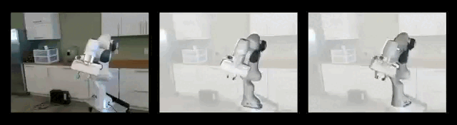
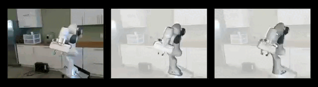

Real-time Holistic Robot Pose Estimation with Unknown States
Abstract
Estimating robot pose from RGB images is a crucial problem in computer vision and robotics. While previous methods have achieved promising performance, most of them presume full knowledge of robot internal states, e.g. ground-truth robot joint angles, which are not always available in real-world scenarios. On the other hand, existing approaches that estimate robot pose without joint state priors suffer from heavy computation burdens and thus cannot support real-time applications. This work addresses the urgent need for efficient robot pose estimation with unknown states. We propose an end-to-end pipeline for real-time, holistic robot pose estimation from a single RGB image, even in the absence of known robot states. Our method decomposes the problem into estimating camera-to-robot rotation, robot state parameters, keypoint locations, and root depth. We further design a corresponding neural network module for each task. This approach allows for learning multi-facet representations and facilitates sim-to-real transfer through self-supervised learning. Notably, our method achieves inference with a single feedforward, eliminating the need for costly test-time iterative optimization. As a result, it delivers a 12 times speed boost with state-of-the-art accuracy, enabling real-time holistic robot pose estimation for the first time.
Framework
We factorize the holistic robot pose estimation task into several sub-tasks, including the estimation of camera-to-robot rotation, robot joint states, root depth, and root-relative keypoint locations. We then design corresponding neural network modules for each sub-task.
Results
Qualitative Comparison with RoboPose On Real-World Videos of Panda
Input Ours RoboPose 


Results presented here illustrates that our approach's ability to produce more stable and accurate estimates in multiple videos from the real-world Panda Datasets.
Qualitative Comparison with RoboPose on Images from 3 Different Robots

Results presented here illustrates that our approach's ability to produce high-quality estimates across different robot morphologies. Particularly, our approach demonstrates superior performance in highly challenging cases, including self-occlusions, truncations, and extreme lighting conditions.
Qualitative Comparison with RoboPose on Fresh-Collected Lab Images of Panda
The qualitative results for freshly-collected lab images are presented here. No markers were used in the process. For instance, in the image located in the upper row, our method demonstrates a more accurate estimation of the pose of the robot's base.